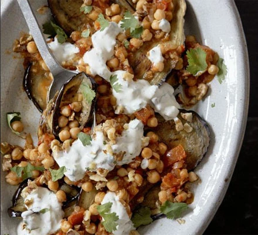

See
Miniatures, Marbling, and Calligraphy
"Traditional Turkish art has many facets including metal, glass, wood, and leather artwork as well as handwritten books, lamps, and stone carvings. However, the traditional art of miniatures, marbling, and calligraphy are some of the most well-known. We went back in time to follow the story of these unique visual forms of Turkish art." - Culture Trip
Traditional Turkish artListen
Selda - Selda (1976)
"The music you are about to hear defies categorisation. But for all intents and multi-purposes, this record is a folk album. Embodying all the aesthetic watermarks of a private press country LP, Selda’s debut long player from 1976 has masqueraded as lamb dressed as mutton, throwing many a discerning wolf from the gourmet scent. Behold! Space age, Anatolian, electronic, progressive-protest, psych-folk-funk-rock from the Middle East. All of the above ingredients are presented immaculately with up-most authenticity and conviction to create a delectable hybrid concoction which has never been replicated or equalled in the 3 mutant decades since its recording." - Finders Keepers
Selda on YouTubeTaste
Grilled aubergines with spicy chickpeas & walnut sauce
This vegetarian dish is packed full of great textures and tastes - smoky aubergine, nutty chickpeas and earthy walnuts
 Grilled aubergines recipe